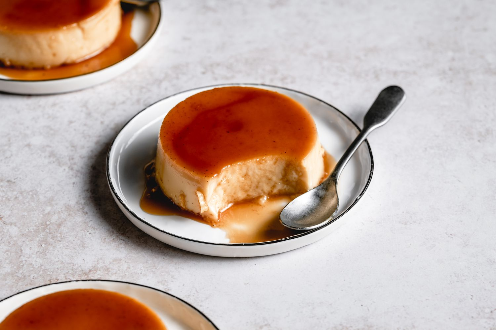

Flan
Sweet and creamy. Use as much sugar as you'll like for a sugary and glassy top.
Ingredients
- Flan Ingredients
- 3/4 cup of granulated sugar
- 4 large egss
- 1 (14oz) can of sweetened condensed milk
- 1 1/4 cups of whole milk
- 1 Tbps vanilla extreact
Instructions
- Preheat oven to 350°F
- Pour the sugar into the skillet over medium heat. Stir the sugar continually until itbegins to brown and clump togehter. Keep stirring until the sugar completely melts and dissolves into a golden-brown syrup. Remove the syrup from the heat as soon as it has dissolves as it can burn.
- Working quickly, carefully pour the caramel into desired choice of pan. Pour the caramel evenly into the bottom of the pan so the entire bottom is coated. You can use an oven mitt to move the pan from side to side to get the caramel evenly distributed.If the caramel hardens too quickly, carefully reheat the pan by palcing it directly on the stove or on the skillet for a few seconds.
- Set the caramel-coated pan aside to cool and harden.
- In a large mixing bowl, add the eggs, sweetened condensed milk, whole milk and vanialla extract. Whisk together until everything is fully combined, but try not to overwhisk so that there aren't too many air bubbles in the mixture.
- Pour the custard miture into the caramel-coated pan. Cover the top of the pan with aluminum foil.
- Place the flan pan in a large baking dish and pour enough water in the dish until it reaches about halfway up the pan. Carefully place the baking dish in the oven and bake for 1 hour and 15 minutes.
- Carefully remove the dish from the oven, and then lift the flan pan out of the water bath. Remove the aluminum foil and let it cool to room temperature. The flan might be a little jiggly, but that is okay.
- Once it's cooled, cover with aluminum foil and refrigerate for 4 hours or overnight.
- To serve, remove the aluminum foil and slide a knife along the edges of the pan or place pan in hot water to melt some of the sugar to loosen it up. Place a plate or platter on top of the plan, grab a hold of both the plate and the pan and quickly and securely flip it over so that the flan is now upside down. Carefully lift off the flan pan. Your flan should be sitting in the caramel on the plate, ready to enjoy!
- Carefully lift the flan pan up. The flan shouod be on the plate, if it's not, place the pan back down and let it sit for a few moments. You could try tapping the sides of the pan a bit or even give the sides a squeeze.
- Slice the flan and serve with the rich caramel sauce.